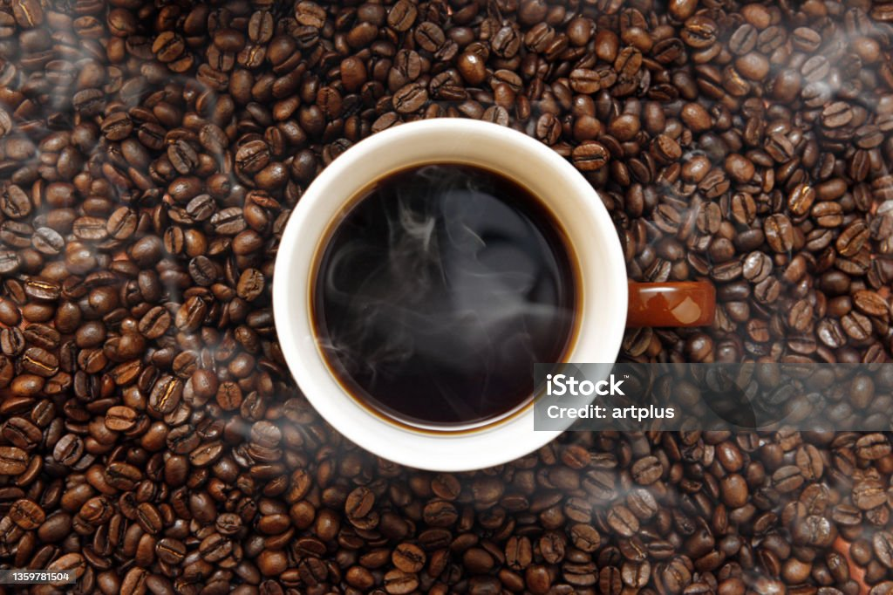

Café
Capuchino
Café
Ruben Café tiene como objetivo principal la difusión de cafeterías y restaurantes para incrementar el consumo local.
Nuestras Especialidades
- Café Latte
- Capuchino
- Café Olla
- Café Moka